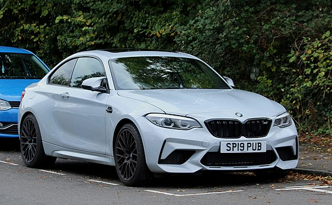

From Wikipedia, the free encyclopedia
The BMW M2 is a high-performance version of the BMW 2 Series automobile developed by BMW's motorsport division, BMW M GmbH. As the 2 Series replaced the 1 Series coupé and convertible models, the M2 was marketed as the cheapest and most basic M Car in the range. The M2 featured a more powerful and responsive, turbocharged and special tuned N55 engine, while its successor, the M2 Competition, featured a twin-turbocharged engine (S55); improved handling, suspension, and braking systems; aerodynamic body enhancements; interior/exterior accents with the tri-colour "M" (Motorsport) badging and increased weight. The M2 is unofficially considered as an indirect successor to the BMW 1 Series M Coupé.L
The M2 was unveiled in Need for Speed: No Limits in November 2015, before later premiering at the North American International Auto Show in January 2016.[3] Production commenced in October 2015 and the M2 was only available as a rear-wheel drive coupé.[4] The M2 is powered by the turbocharged 3.0-litre N55B30T0 straight-six engine rated at 272 kW (365 hp) at 6,500 rpm and 465 N⋅m (343 lb⋅ft) between 1,450–4,750 rpm, while an overboost function temporarily increases torque to 500 N⋅m (369 lb⋅ft).[5] The M2 features pistons from the F80 M3 and F82 M4, and has lighter aluminium front and rear suspension components resulting in a 5 kg (11 lb) weight reduction.[6] The M2 is available with a 6-speed manual or with a 7-speed dual-clutch transmission which features a 'Smokey Burnout' mode.[7] 0-100 km/h acceleration times are 4.5 seconds manual transmission[8] models and 4.3 seconds for models equipped with the 7-speed dual clutch transmission.[9] Top speed is limited to 250 km/h (155 mph) but can be extended to 270 km/h (168 mph) with the optional M Driver's package.[10] The M2 was used as a safety car in the 2016 MotoGP season.
150 examples produced for the US market. The car is finished in Alpine White over black Dakota leather, and power is provided by a turbocharged 3.0-liter inline-six paired with a seven-speed M double-clutch transmission or manual 6 speed transmission. Performance Edition equipment includes an M Performance coilover suspension and exhaust system with titanium tips, along with black trim, manually-adjustable front sport seats, an M Performance sport and track key. All 150 Performance Editions were finished in Alpine White with Shadowline trim. Additional equipment includes xenon headlights, LED door projectors, a rear spoiler lip, and black-finished kidney grilles, side gills, and mirror caps. Factory 19″ Style 437M wheels wear staggered-width Michelin Pilot Super Sport tires. The Performance Edition equipment includes adjustable M Performance coilovers, and braking is handled by blue-finished calipers and cross-drilled rotors that are shared with the contemporary M4. The interior features seats trimmed in black Dakota leather with contrasting blue stitching, while carbon-fiber trim accents the dashboard, center console, and door panels. Manually-adjustable front sport seats are equipped as part of weight savings, along with single-zone automatic climate control, and removal of the smoker’s package and Comfort Access proximity key. Factory output was rated at 365 horsepower and 343 lb-ft of torque, and the top speed was increased from 155 mph to 168 mph for the Performance Edition. A coilover adjustment wrench and rebound adjustment knob were included, along with an M Performance key that activates sport and track mode.
The BMW M2 Competition was introduced at the 2018 Beijing Auto Show and succeeded the standard M2 Coupé as a more powerful variant.[12] Production began in July 2018.[13] The M2 Competition uses the high performance S55 engine which is a variant of the 3.0-litre twin turbocharged straight six engine found in the F80 M3 and F82 M4.[14] The engine features a redesigned oil supply system and modified cooling system from the BMW M4 with the Competition Package, and also features a gasoline particulate filter in certain European Union countries to reduce emissions.[15] Compared to the standard M2, the S55 produces an additional 30 kW (40 hp) and 85 N⋅m (63 lb⋅ft), resulting in a larger and more sustained power output of 302 kW (405 hp) between 5,370–7,200 rpm, and 550 N⋅m (406 lb⋅ft) at 2,350–5,230 rpm.[16] The 0-100 km/h acceleration time is 4.4 seconds for six-speed manual transmission models, and 4.2 seconds for models with the 7-speed dual clutch transmission.[17] Top speed is electronically limited to 250 km/h (155 mph), but the M Driver's package can extend the limit to 280 km/h (174 mph) which is 10 km/h (6 mph) higher than in the M2.[18] The M2 Competition also has a carbon-fibre reinforced plastic strut bar, enlarged kidney grilles, and larger brake discs of 400 mm (15.7 in) in the front axle and 380 mm (15.0 in) in the rear axle.[9] Because of the new engine and cooling system, the M2 Competition is 55 kg (121 lb) heavier than the standard M2 at 1,550 kg (3,417 lb) for manual transmission models and 1,575 kg (3,472 lb) for dual-clutch transmission models.
The BMW M2 CS, a track focused version of the BMW M2, was unveiled online in November 2019 prior to its introduction at the LA Auto Show. Production began in March 2020, with 2,200 units planned.[20] The M2 CS uses the same engine as the F82 M4 with competition package, a more powerful version of the S55 which is rated at 331 kW (444 hp) and 550 N⋅m (406 lb⋅ft) of torque.[21] The 0-100 km/h (62 mph) acceleration time is 4.0 seconds for six-speed manual transmission models, and 3.8 seconds for models with the 7-speed dual clutch transmission. The rotors and calipers are carried over from the M2 Competition, but ceramic brakes are newly available as an option.[22] An adaptive M suspension is standard along with an electronic locking differential. The wheel hubs and control arms are made from forged aluminium, with a carbon-fibre transmission tunnel as an additional weight-saving measure. The hood, roof and various aerodynamic parts are made of a carbon-fibre composite. The active exhaust system is new as well, and unique wheel designs in high-gloss Jet black or matte gold finishes differentiate it from other M2 models; Michelin Cup 2 tires are also available. Inside, the centre console is also carbon-fibre, with Alcantara trim and an embroidered red "CS" badge; the seats are leather and Alcantara with red contrast stitching and are complemented by contrast-stitched Alcantara on the steering wheel. The M2 was also confirmed to be sold in the Mexican market.[23]
The M235i Racing is a track version of the 2 Series developed by the BMW Motorsport division and was produced from 2014 to 2018.[24] It was aimed at amateur drivers due to its relatively lower price and addition of driver aids such as anti-lock brakes, traction control, and dynamic stability control.[25] The M235i Racing uses an 8-speed automatic transmission and features a modified version of the N55B30O0 engine found in the standard M235i, and produces 329 hp (245 kW) at 5,800–6,000 rpm and 450 N⋅m (332 lb⋅ft) at 1,300–4,500 rpm.[26] The M235i Racing also features a mechanical limited-slip differential and larger brakes and springs.[27] The front and rear spoilers, diffuser, and wing mirrors are from the BMW M Performance Parts catalog.[28] The car was used in the BMW M235i Racing Cup which was part of the VLN Endurance Championship at the Nürburgring.[29] It was also sold to customer teams in other championships such as the 24H Series, Touring Car Endurance Series, and Pirelli World Challenge.
The BMW M240i Racing is an updated version heavily revised by BMW M Motorsport from its predecessor, the BMW M235i Racing, used from the 2019 season and on of the BMW M240i Racing Cup, from the 2019 season and on. The BMW M240i Racing features revised spoiler end plates, updated engine software, and an optional newly designed driver's seat. The M240i Racing has an increased power output of 340 hp (254 kW), but produces an additional 10 N⋅m (7 lb⋅ft) at 460 N⋅m (339 lb⋅ft), from the same 3-liter twin-turbo inline-6 from its predecessor.[31] As is it is a racecar, it still has an FIA-approved full roll cage, certified by DMSB. Deliveries start in 2020.
The BMW M2 CS Racing is a racing variant of the road-going M2 CS, developed by BMW M Motorsport, to get beginner drivers to be involved in motorsport. The racecar has many developments that have been inspired by and developed further from its predecessors, the BMW M235i Racing, and the BMW M240i Racing, along with its "bigger brother" racecar, the BMW M4 GT4. The racecar gets power from a race-prepped 3-liter twin-turbo inline-6 that can generate anywhere from 280 hp (205 kW) to 365 hp (268 kW) depending on the configuration of the power stick, which is in turn controlled by the need to have a balance of performance or from regulations of a Permit B classification. The BMW M2 CS Racing also features a full FIA-approved roll cage, along with many motorsport-specific components, such as the rear wing, including ABS systems specifically tailored to the car by BMW M Motorsport. A stronger performance package is being made right now to allow the racecar to have up to 450 hp, just 6 hp more than the current street-legal version. Deliveries of the BMW M2 CS Racing are expected to start in mid-2020.